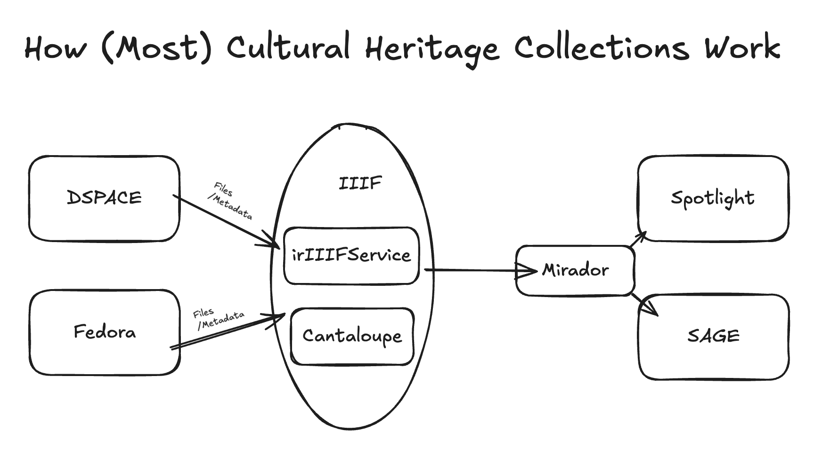

Infrastructure, Software, and Systems¶
The Digital Library Program of Texas A&M University is made up of many microservices and applications. This document attempts to define the various applications in use by the Libraries, how they are used, and where. To keep things simple, this document will only include applications that are considered a part of the digital library program. As a result, data repository services and applications such as Vireo will be ignored.
OAKTrust and the Institutional Repository¶
Our institutional repository, OAKTrust, is delivered using DSPACE. The use of DSPACE at TAMU goes back several decades and has always been the primary repository system used by the Libraries. The repository is divided into communities, subcommunities, collections, and subcollections. Until very recently, DSPACE did not have any real support for content models or work types. Instead, it was designed to be structurally agnostic and focused on managing workflows, groups, and users related to collections of objects. As this evolved, other things occurred such as DSPACE requiring a collection to be tied to a specific content model. The effects of this can be seen across our various collections and communities.
OAKTrust primarily consists of traditional institutional repository content: ETDs, preprints, post-prints, and grey literature. There is a mix of mediated and unmediated workflows largely tied to the origins of the collection. Historically, there has been no MOUs, MOAs, or user agreements, so expectations of the Libraries and users can vary wildly without much context. The repository has also been thought of as a preservation resource and place of deposit for actively published resources. This creates challenges for the Libraries as we approach ADA Title II. More information regarding the thinking behind OAKTrust can be seen in the OAKTrust Policies page.
While DSPACE is primarily thought of as the institutional repository, it does much more. In fact, over 30,000 works, many of which are things you would expect to find in a cultural heritage repository, are deposited in the University Libraries community. Normally, but not always, these works will be discoverable through something like SAGE as DSPACE historically wasn’t designed to deliver cultural heritage collections.
SAF Creator¶
Data is commonly batch imported into OAKTrust via SAF imports. SAF imports can be uploaded via the web (if less than 500 MB) or via a command line interface if larger. More information about SAF imports can be found online in the DSPACE documentation on the topic.
To build a SAF import, we commonly use an in-house built application called SAF Creator. SAF Creator takes a CSV that is informed by the DSPACE documentation above and creates a file structure with metadata and other supplementary files that can be imported into DSPACE. In addition to creating data for import, it also attempts to validate that the structure will be accepted by DSPACE. While this works in most cases, if you use know DublinCore fields the import will validate and pass even though it will be rejected by DSPACE.
Fedora¶
Fedora at Texas A&M University is used for two use cases: A/V materials served by Avalon Media System and cultural heritage collections served through SAGE or Spotlight. Originally, it seems the plan for Fedora was to serve as the repository and digital assets layer for all cultural heritage material collections. That being said, development behind many of these ideas needed for this never happened. Therefore, with the exception of Avalon, Fedora only holds collections, files, and works for the most simple use cases. Largely, this is multi-canvased and single-canvased image works. By multi-canvased images, we mean book like materials where there is no Alto, HOCR, or OCR but only images. While Fedora itself is agnostic to what it can whole, our implementation of Portland Common Data Model was short sighted. This was caused by the nature of the work and what our developers were asked to do.
Fedora at TAMU is headless – we have no way to natively display collections stored here. For that reason, SAGE or Spotlight is used and must be manually configured on a collection by collection basis. While Fedora is a discreet service from Avalon, the integration between these two services means you can expect things to be organized in a traditional DAMS way. For non-Avalon uses, collections are loosely constructed and you many have 6 or 7 unrelated collection aggregations that must be organized together in order to serve collections effectively.
To understand more structures in Fedora, please see Environmental Scan: Content Models and TAMU Work Type Components and Presentation Recipes.
SAGE¶
SAGE is a digital collections discovery platform created by developers at Texas A&M University. SAGE relies on Solr for both the source and destination of metadata. When a new collection is ingested into Fedora, a command is issued to have Solr reindex Fedora within the appropriate pod (e.g. https://rancher-dev.library.tamu.edu/dashboard/c/c-zfm6r/explorer/apps.deployment/fcrepo4/fedora#pods)
curl -X POST http://localhost:9080/reindexing -H "Content-Type: application/json" -d '["broker:queue:solr.reindex"]'
This makes all the metadata and fedora resources be available in Solr. After data is available in a Solr Core according to how SAGE expects, a new SAGE collection can be created. Detailed instructions can be found in the workflows section.
The most important thing to understand about SAGE is that it’s DAMS-agnostic. SAGE just needs data to match a certain format. It is built to hook up to an SOLR instance and remap all the data to a format SAGE can understand. Because of this, a SAGE site can be built from 1 to many collections.
Example SAGE Instances¶
Spotlight¶
Spotlight is the system used to allow curators and librarians to create digital exhibits from materials in the digital library program.
Example Spotlight Instances¶
Mirador¶
Mirador is the viewer that is used to display works from our digital library program. Mirador is used within SAGE and Spotlight using a manifest url that is Solrized to a Solr document.
An example work can be seen in this “Hilliers Funeral Home” Example.
Cantaloupe¶
The primary IIIF Image server used at TAMU is Cantaloupe. Cantaloupe is used to support tiling and deep zooming using for files in DSPACE and Fedora. A delegate file exists in our cantaloupe application that translates how to create derivatives from each properly. Our Cantaloupe configuration supports many file types including:
small images (JPEGs, PNGS)
large images (Tiffs, JP2s)
PDFs
Because of a bug in Cantaloupe for PDFs, we build from a specific commit message.
irIIIFService¶
irIIIFService is an in house written IIIF Presentation v2 implementation. It is designed to work with prescribed models in DSPACE and Fedora. More information can be found in the IRIIIFService GitHub Repo.
MAGPIE¶
MAGPIE, or Metadata Assignment GUI Providing Ingest and Export App, is the primary application we use to ingest data into Fedora. MAGPIE can currently only run locally on x86 architecture. MAGPIE assumes that data has been modelled in SAF format which aids in reusability but is odd for a linked data system like Fedora. More information can be found in the GitHub repository.
CAP¶
CAP, or Curator’s Administration Platform, is an open source application that has been designed to provide a common user interface (UI) and application programing interface (API) for any Institutional Repository (IR) participating within a Digital Asset Management Ecosystem (DAME). Currently CAP has support for Fedora 4x through use of the fcrepo-java-client.
CAP is the only solution we have in house for editing an existing Fedora work.
More information can be found online in the wiki.
Open ONI¶
Open ONI is a discreet system from Fedora and DSPACE. It’s primary use is for newspapers and text highlighting in a work. It’s files are stored internally and it uses it’s own image server (RAIS server).
Open ONI is a fork of the Chronicling America project. It is designed specifically for newspapers, but because we have no Alto / HOCR integration in Fedora currently, when tend to use it in ways it wasn’t designed for.
For some reason, our partners in Technology Services do not want us depositing materials on our own. Instead, they want us to ask for a deposit. Normally, this is okay, but we should note that they can be busy with other things and limited in what they have time to do.
Example OpenOni Collections¶
Internet Archive Bookreader¶
For non-newspaper collections with text highlighting needs, we use a custom app built with Internet Archive bookreader. Like Open Oni, content in these collections are not stored in a digital asset management system.
For more information, see bookreader.
Example InternetArchive Bookreader Collections¶
Open Journal System¶
Open Journal System is another system in use where assets are not stored in DSPACE or Fedora. OJS is used primarily for collections where an editorial workflow is needed, but it is also used for local collections. This is because our catalogers and metadata librarians felt it was necessary to structure things like a serial.
Example OJS Collections¶
HathiTrust¶
The Libraries contributes rare books and serials to HathiTrust. Normally, this is limited to public domain materials but not always. In order to be publicly available in HathiTrust, the work must pass its rights database. Doing this requries relative straightforward rights determination, a Creative Commons license, or the IP holder signing the item over to the public domain.
Avalon Media System¶
Example Avalon Media System Collections¶
ArchiveIt¶
ArchiveIt is the primary solution used for web archiving. It includes a collection of archived websites including the Dr. Gwendoline Y. Fortune Papers, various Texas A&M websites, and George R.R. Martin’s website.
This solution is ran entirely out of Cushing Special Collections.
Browsertrix¶
ArchiveIt is designed to capture textual webarchives. Therefore, it’s not always the most appropriate application when capturing high fidelity websites where JavaScript is used to render many parts of the screen. When this happens, Browsertrix is used.
Other Things¶
Cervantes Collection¶
The Cervantes Collection created by Dr. Eduardo Urbina, is an initiative dedicated to the life, works, and legacy of Miguel de Cervantes, the renowned Spanish writer best known for Don Quixote. The project provides a comprehensive online resource for scholars, students, and enthusiasts. The online tools are based upon one of the world’s largest print collections of Cervantes. Known as the, Eduardo Urbina Cervantes Project Collection, these editions are housed at Cushing Memorial Library and Archives.
The Cervantes Project, housed at Texas A&M University (TAMU), started as a collaborative academic project between Texas A&M’s Department of Hispanic Studies, Department of Computer Science’s Center for the Study of Digital Libraries (CSDL), Cushing Memorial Library & Archives, Universidad de Castilla-La Mancha, and Dr. Fred Jehle of Indiana-Purdue University.
The project consists of several components including: a discovery interface, a variorum, and an editor. It is all written in a legacy JSP site.
Crossref¶
Crossref is the service we use for DOI minting. All DOIs are minted by digital collections.